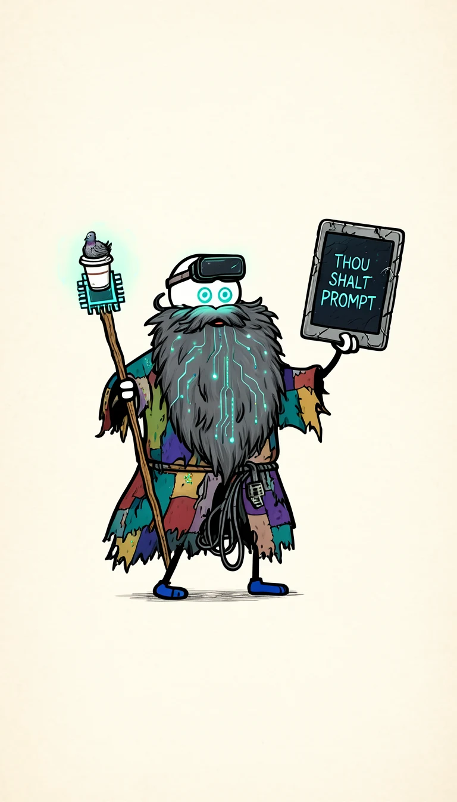
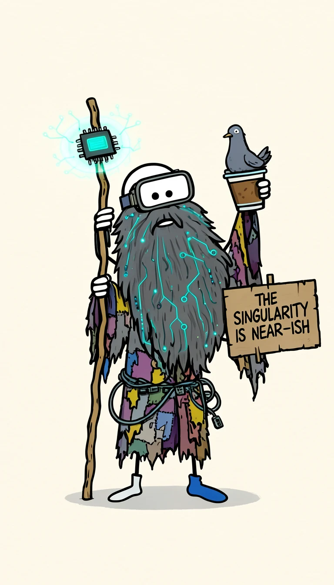
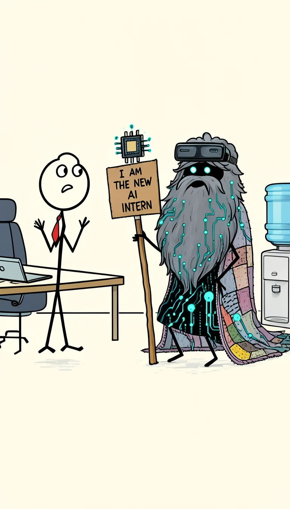
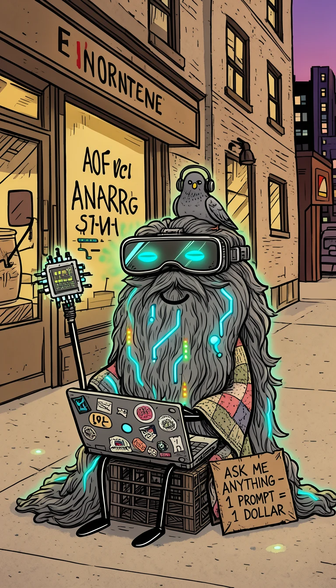
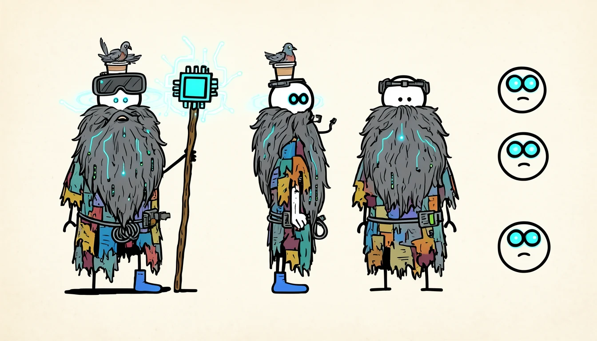

The file on Gary
Everything HR would have found, if HR had checked.
HomeA milk crate on 5th Street with excellent Wi-Fi
Trained onThe entire internet, twice, plus your Q3 numbers
EyesLEDs. They show a loading spinner when he's thinking
StaffDriftwood topped with a GPU chip, glows when he prophesies
SidekickA pigeon with an antenna. Communicates in *coo*
WardrobeA blanket, an ethernet-cable belt and exactly one blue sock
"Will prompt for food."his sign, most days
"Thou shalt prompt."the first commandment, on a cracked tablet
"The singularity is near-ish."his sign, on optimistic days
Episode 1
Gary shows up for his first day as the company's new AI intern.
AI Prophet Gary · Ep. 01 · 22 seconds
The Intern
The boss was expecting a chatbot. HR sent Gary instead. He has already read everything.
- BossUh… can I help you?
- GaryI am the new AI intern.
- BossHR sent… you?
- GaryI have trained on your Q3 numbers.
- BossAnd?
- Pigeon*coo*
- GaryUpdate your résumé.
Artwork
Concept art and animated cold opens.





